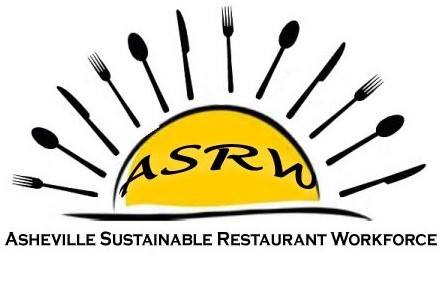

What We Have Done
A Sweet Victory For Tupelo Honey Workers by Alia Todd on January 7, 2016
Tupelo Bartender Says Wage Campaign a Success
BY EVAN DONOVAN WEDNESDAY, JANUARY 13TH 2016
Asheville restaurant workers unite for labor rights
Mackensy Lunsford, mlunsford@citizen-times.com 2 p.m. EDT March 27, 2015
Restaurant workers: New face of the working class?
Mackensy Lunsford, mlunsford@citizen-times.com 8:49 a.m. EDT October 12, 2015
Local food service pay declines
David Forbes, Asheville Blade 9:17 p.m. EDT May 21, 2015
Proposed overtime pay reform has restaurant community divided
Mackensy Lunsford, mlunsford@citizen-times.com 10:30 a.m. EDT July 11, 2015
Not so sweet
by David Forbes October 12, 2015
A seat at the table: Alia Todd and Asheville Sustainable Restaurant Workforce
Posted on March 14, 2015 by Max Hunt
Finding Asheville blog about Asheville Sustainable Restaurant Workforce, Posted on January 22, 2016